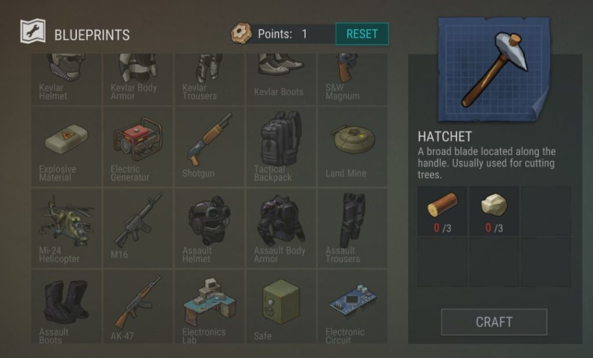

Hunt for Upgrades
While a certain functional set of gear is eventually craftable, we're concerned with the first, most important hours of survival where every second is crucial and every advantage matters. You'll be able to fashion your own get-up one day. But for now? You'll need to scavenge for it.
When you finally leave your nest, keep your eyes peeled for three major things on the world map -- Alpha Base, downed airplanes, and Army supply drops. While the supply drops range from kind of useful to "mid game" parts, the downed aircraft and Alpha Base (accessible once you take the A card from the corpse out front) are almost always good for a serviceable (if rough around the edges) military suit and a gun.
Despite the temptation of blasting nearby enemies in 2-5 hits (dealing double the spear's damage at a much higher rate), try to save your ammo for the horde and let your spear do most of the heavy lifting while exploring. And as long as you're exploring green areas (denoted by the icon above them on the world map), you can probably stash your armor at home as well.
Ignore the base's Code Vault for now (since it doesn't actually do anything currently), get your upgrades ready, and try to grind out as much as you safely can. While zombies might be worth about 5x a gathering tick, most gathering nodes have at least 5 or so whacks in them and don't threaten your life.